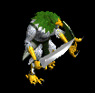
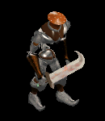
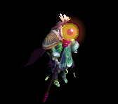
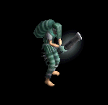
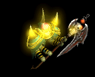
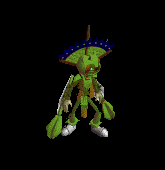
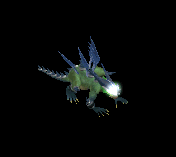

腕刺青 をドロップするmob一覧
一覧ページへ
| ハンター | 人間 | 一般1 | |||||||
|---|---|---|---|---|---|---|---|---|---|
 | 弓(410) | 片手剣(270) | 矢(410) | グローブ(230) | 手首(210) | 腕刺青(150) | クロー(270) | 銃(410) | 魔弾(410) |
| アーチャー | 人間 | 一般2 | |||||||
 | 弓(380) | 片手剣(250) | 矢(380) | グローブ(210) | 手首(190) | 腕刺青(160) | クロー(250) | 銃(380) | 魔弾(380) |
| シューター | 人間 | 一般3 | |||||||
 | 弓(360) | 片手剣(240) | 矢(360) | グローブ(200) | 手首(180) | 腕刺青(170) | クロー(240) | 銃(360) | 魔弾(360) |
| スナイパー | 人間 | セミ1 | |||||||
 | 弓(390) | 片手剣(260) | 矢(390) | グローブ(220) | 手首(200) | 腕刺青(180) | クロー(260) | 銃(390) | 魔弾(390) |
| ブラックエルフ | 人間 | ボス1 | |||||||
 | 弓(470) | 片手剣(310) | イベント(470) | グローブ(260) | 手首(240) | 腕刺青(190) | クロー(310) | 銃(470) | |
| エルフ戦士 | 人間 | 一般3 | |||||||
 | 片手剣(360) | 弓(240) | 矢(360) | 鎧(200) | 指輪(180) | 腕刺青(120) | クロー(360) | 銃(240) | 魔弾(360) |
| エルフ暗殺者 | 人間 | 一般4 | |||||||
 | 片手剣(300) | 投擲(200) | 盾(300) | 兜・帽子(170) | 指輪(150) | 腕刺青(130) | クロー(300) | ||
| エルフ巡察者 | 人間 | セミ1 | |||||||
 | 片手剣(390) | 弓(260) | 矢(390) | 兜・帽子(220) | 指輪(200) | 腕刺青(140) | クロー(390) | 銃(260) | 魔弾(390) |
| エルフ騎士 | 人間 | セミ2 | |||||||
 | 片手剣(420) | 槍(280) | 盾(420) | 鎧(230) | 指輪(210) | 腕刺青(150) | クロー(420) | 箒(280) | |
| エルフ王 | 人間 | ボス3 | |||||||
 | 片手剣(510) | 弓(340) | 矢(510) | 鎧(280) | 指輪(260) | 腕刺青(160) | クロー(510) | 銃(340) | 魔弾(510) |
| 鷲戦士 | 悪魔 | 一般1 | |||||||
 | 片手剣(410) | 両手剣(270) | 盾(410) | グローブ(230) | 手首(210) | 腕刺青(110) | 鎌(270) | クロー(410) | |
| 鷲闘士 | 悪魔 | 一般2 | |||||||
|  | 片手剣(380) | 弓(250) | 盾(380) | グローブ(210) | 手首(190) | 腕刺青(120) | クロー(380) | 銃(250) | |
| 鷲狂戦士 | 悪魔 | 一般3 | |||||||
 | 片手剣(360) | 弓(240) | 矢(360) | グローブ(200) | 手首(180) | 腕刺青(130) | クロー(360) | 銃(240) | 魔弾(360) |
| 鷲剣士 | 悪魔 | セミ1 | |||||||
 | 片手剣(390) | 両手剣(260) | 盾(390) | グローブ(220) | 手首(200) | 腕刺青(140) | 鎌(260) | クロー(390) | |
| 鷲王 | 悪魔 | ボス1 | |||||||
 | 片手剣(470) | 弓(310) | 盾(470) | グローブ(260) | 手首(240) | 腕刺青(150) | クロー(470) | 銃(310) | |
| ハンターEx | 人間 | 一般1 | |||||||
| 弓(410) | 片手剣(270) | 矢(410) | グローブ(230) | 手首(210) | 腕刺青(150) | クロー(270) | 銃(410) | 魔弾(410) |
| アーチャーEx | 人間 | 一般2 | |||||||
| 弓(380) | 片手剣(250) | 矢(380) | グローブ(210) | 手首(190) | 腕刺青(160) | クロー(250) | 銃(380) | 魔弾(380) |
| アーチャーEx | 人間 | 一般3 | |||||||
| 弓(360) | 片手剣(240) | 矢(360) | グローブ(200) | 手首(180) | 腕刺青(170) | クロー(240) | 銃(360) | 魔弾(360) |
| スナイパーEx | 人間 | セミ1 | |||||||
| 弓(450) | 片手剣(300) | 矢(450) | グローブ(250) | 手首(230) | 腕刺青(180) | クロー(300) | 銃(450) | 魔弾(450) |
| ブラックエルフEx | 人間 | ボス1 | |||||||
| 弓(1200) | 片手剣(800) | イベント(1200) | グローブ(670) | 手首(600) | 腕刺青(190) | クロー(800) | 銃(1200) | |
| エルフ戦士Ex | 人間 | 一般3 | |||||||
| 片手剣(360) | 弓(240) | 矢(360) | 鎧(200) | 指輪(180) | 腕刺青(120) | クロー(360) | 銃(240) | 魔弾(360) |
| エルフ暗殺者Ex | 人間 | 一般4 | |||||||
| 片手剣(300) | 投擲(200) | 盾(300) | 兜・帽子(170) | 指輪(150) | 腕刺青(130) | クロー(300) | ||
| エルフ巡察者Ex | 人間 | セミ1 | |||||||
| 片手剣(450) | 弓(300) | 矢(450) | 兜・帽子(250) | 指輪(230) | 腕刺青(140) | クロー(450) | 銃(300) | 魔弾(450) |
| エルフ騎士Ex | 人間 | セミ2 | |||||||
| 片手剣(650) | 槍(430) | 盾(650) | 鎧(360) | 指輪(330) | 腕刺青(150) | クロー(650) | 箒(430) | |
| エルフ王Ex | 人間 | ボス3 | |||||||
| 片手剣(2800) | 弓(1870) | 矢(2800) | 鎧(1560) | 指輪(1400) | 腕刺青(160) | クロー(2800) | 銃(1870) | 魔弾(2800) |
| 鷲戦士Ex | 悪魔 | 一般1 | |||||||
| 片手剣(410) | 両手剣(270) | 盾(410) | グローブ(230) | 手首(210) | 腕刺青(110) | 鎌(270) | クロー(410) | |
| 鷲闘士Ex | 悪魔 | 一般2 | |||||||
| 片手剣(380) | 弓(250) | 盾(380) | グローブ(210) | 手首(190) | 腕刺青(120) | クロー(380) | 銃(250) | ||
| 鷲狂戦士Ex | 悪魔 | 一般3 | |||||||
| 片手剣(360) | 弓(240) | 矢(360) | グローブ(200) | 手首(180) | 腕刺青(130) | クロー(360) | 銃(240) | 魔弾(360) |
| 鷲剣士Ex | 悪魔 | セミ1 | |||||||
| 片手剣(450) | 両手剣(300) | 盾(450) | グローブ(250) | 手首(230) | 腕刺青(140) | 鎌(300) | クロー(450) | |
| 鷲王Ex | 悪魔 | ボス1 | |||||||
| 片手剣(1200) | 弓(800) | 盾(1200) | グローブ(670) | 手首(600) | 腕刺青(150) | クロー(1200) | 銃(800) | |
| ゴーレムEx | 神獣 | 一般2 | |||||||
|  | 両手剣(380) | 杖(250) | 状態異常回復2(100) | 足(210) | 爪(190) | 腕刺青(130) | 鎌(380) | 本(250) | |
| クレイゴーレムEx | 神獣 | 一般3 | |||||||
 | 両手剣(360) | 杖(240) | 状態異常回復2(90) | 足(200) | 槍投擲機(180) | 腕刺青(140) | 鎌(360) | 本(240) | |
| ロックゴーレムEx | 神獣 | 一般4 | |||||||
 | 両手剣(300) | ステッキ(200) | 状態異常回復2(80) | 足(170) | 槍投擲機(150) | 腕刺青(150) | 鎌(300) | ||
| メタルゴーレムEx | 神獣 | セミ3 | |||||||
 | 両手剣(800) | スリング(530) | 状態異常回復2(200) | 足(440) | 槍投擲機(400) | 腕刺青(160) | 鎌(800) | ||
| ダイヤゴーレムEx | 神獣 | ボス1 | |||||||
 | 両手剣(1200) | 鈍器(800) | 状態異常回復2(300) | 足(670) | 冠(600) | 腕刺青(170) | 鎌(1200) | ||
| 骸骨サンタ | アンデット | ボス3 | |||||||
 | 弓(1210) | 片手剣(810) | 矢(1210) | グローブ(700) | 手首(610) | 腕刺青(150) | クロー(810) | 銃(1210) | 魔弾(1210) |
| ハンターZin | 人間 | 一般1 | |||||||
| 弓(1210) | 片手剣(810) | 矢(1210) | グローブ(670) | 手首(610) | 腕刺青(150) | クロー(810) | 銃(1210) | 魔弾(1210) |
| アーチャーZin | 人間 | 一般2 | |||||||
| 弓(1380) | 片手剣(920) | 矢(1380) | グローブ(770) | 手首(690) | 腕刺青(160) | クロー(920) | 銃(1380) | 魔弾(1380) |
| アーチャーZin | 人間 | 一般3 | |||||||
| 弓(1560) | 片手剣(1040) | 矢(1560) | グローブ(870) | 手首(780) | 腕刺青(170) | クロー(1040) | 銃(1560) | 魔弾(1560) |
| スナイパーZin | 人間 | セミ1 | |||||||
| 弓(650) | 片手剣(430) | 矢(650) | グローブ(360) | 手首(330) | 腕刺青(180) | クロー(430) | 銃(650) | 魔弾(650) |
| ブラックエルフZin | 人間 | ボス1 | |||||||
| 弓(1000) | 片手剣(670) | イベント(1000) | グローブ(560) | 手首(500) | 腕刺青(190) | クロー(670) | 銃(1000) | |
| エルフ戦士Zin | 人間 | 一般3 | |||||||
| 片手剣(1560) | 弓(1040) | 矢(1560) | 鎧(870) | 指輪(780) | 腕刺青(120) | クロー(1560) | 銃(1040) | 魔弾(1560) |
| エルフ暗殺者Zin | 人間 | 一般4 | |||||||
| 片手剣(1200) | 投擲(800) | 盾(1200) | 兜・帽子(670) | 指輪(600) | 腕刺青(130) | クロー(1200) | ||
| エルフ巡察者Zin | 人間 | セミ1 | |||||||
| 片手剣(650) | 弓(430) | 矢(650) | 兜・帽子(360) | 指輪(330) | 腕刺青(140) | クロー(650) | 銃(430) | 魔弾(650) |
| エルフ騎士Zin | 人間 | セミ2 | |||||||
| 片手剣(750) | 槍(500) | 盾(750) | 鎧(420) | 指輪(380) | 腕刺青(150) | クロー(750) | 箒(500) | |
| エルフ王Zin | 人間 | ボス3 | |||||||
| 片手剣(1200) | 弓(800) | 矢(1200) | 鎧(670) | 指輪(600) | 腕刺青(160) | クロー(1200) | 銃(800) | 魔弾(1200) |
| 鷲戦士Zin | 悪魔 | 一般1 | |||||||
| 片手剣(1210) | 両手剣(810) | 盾(1210) | グローブ(670) | 手首(610) | 腕刺青(110) | 鎌(810) | クロー(1210) | |
| 鷲闘士Zin | 悪魔 | 一般2 | |||||||
| 片手剣(1380) | 弓(920) | 盾(1380) | グローブ(770) | 手首(690) | 腕刺青(120) | クロー(1380) | 銃(920) | ||
| 鷲狂戦士Zin | 悪魔 | 一般3 | |||||||
| 片手剣(1560) | 弓(1040) | 矢(1560) | グローブ(870) | 手首(780) | 腕刺青(130) | クロー(1560) | 銃(1040) | 魔弾(1560) |
| 鷲剣士Zin | 悪魔 | セミ1 | |||||||
| 片手剣(650) | 両手剣(430) | 盾(650) | グローブ(360) | 手首(330) | 腕刺青(140) | 鎌(430) | クロー(650) | |
| 鷲王Zin | 悪魔 | ボス1 | |||||||
| 片手剣(1000) | 弓(670) | 盾(1000) | グローブ(560) | 手首(500) | 腕刺青(150) | クロー(1000) | 銃(670) | |
| ゴーレムZin | 神獣 | 一般2 | |||||||
| 両手剣(1380) | 杖(920) | 状態異常回復2(350) | 足(770) | 爪(690) | 腕刺青(130) | 鎌(1380) | 本(920) | ||
| クレイゴーレムZin | 神獣 | 一般3 | |||||||
| 両手剣(1560) | 杖(1040) | 状態異常回復2(390) | 足(870) | 槍投擲機(780) | 腕刺青(140) | 鎌(1560) | 本(1040) | |
| ロックゴーレムZin | 神獣 | 一般4 | |||||||
| 両手剣(1200) | ステッキ(800) | 状態異常回復2(300) | 足(670) | 槍投擲機(600) | 腕刺青(150) | 鎌(1200) | ||
| メタルゴーレムZin | 神獣 | セミ3 | |||||||
| 両手剣(900) | スリング(600) | 状態異常回復2(230) | 足(500) | 槍投擲機(450) | 腕刺青(160) | 鎌(900) | ||
| ダイヤゴーレムZin | 神獣 | ボス1 | |||||||
| 両手剣(1000) | 鈍器(670) | 状態異常回復2(250) | 足(560) | 冠(500) | 腕刺青(170) | 鎌(1000) | ||
| セイジ | 人間 | ボス3 | |||||||
 | 弓(1380) | 片手剣(920) | 矢(1380) | グローブ(800) | 手首(690) | 腕刺青(160) | クロー(920) | 銃(1380) | 魔弾(1380) |
| セイジマスター | 人間 | セミ3 | |||||||
 | 弓(1560) | 片手剣(1040) | 矢(1560) | グローブ(900) | 手首(780) | 腕刺青(170) | クロー(1040) | 銃(1560) | 魔弾(1560) |
| ティアメス(上部触手) | 動物 | ボス3 | |||||||
 | 弓(1560) | 片手剣(1040) | 矢(1560) | グローブ(900) | 手首(780) | 腕刺青(170) | クロー(1040) | 銃(1560) | 魔弾(1560) |
| ティアメス(本体) | 動物 | ボス3 | |||||||
 | 弓(1560) | 片手剣(1040) | 矢(1560) | グローブ(900) | 手首(780) | 腕刺青(170) | クロー(1040) | 銃(1560) | 魔弾(1560) |
| ティアメス(下部触手) | 動物 | ボス3 | |||||||
 | 弓(1560) | 片手剣(1040) | 矢(1560) | グローブ(900) | 手首(780) | 腕刺青(170) | クロー(1040) | 銃(1560) | 魔弾(1560) |
 | 弓(1560) | 片手剣(1040) | 矢(1560) | グローブ(900) | 手首(780) | 腕刺青(170) | クロー(1040) | 銃(1560) | 魔弾(1560) |
| アークデビル | 悪魔 | ボス3 | |||||||
 | 弓(1560) | 片手剣(1040) | 矢(1560) | グローブ(900) | 手首(780) | 腕刺青(170) | クロー(1040) | 銃(1560) | 魔弾(1560) |
| ドラコリッチ | アンデット | ボス3 | |||||||
 | 弓(1560) | 片手剣(1040) | 矢(1560) | グローブ(900) | 手首(780) | 腕刺青(170) | クロー(1040) | 銃(1560) | 魔弾(1560) |
| ドラコリッチオーブ | アンデット | ボス3 | |||||||
 | 弓(1560) | 片手剣(1040) | 矢(1560) | グローブ(900) | 手首(780) | 腕刺青(170) | クロー(1040) | 銃(1560) | 魔弾(1560) |
| ジャイアント骸骨 Zin | アンデット | 一般4 | |||||||
 | 宝石(30) | 状態異常回復2(50) | 腕刺青(90) | 肩刺青(130) | ステッキ(170) | HP回復(200) | |||
| バイキングヘッド1 Zin | アンデット | セミ2 | |||||||
 | 冠(80) | 状態異常回復2(140) | 腕刺青(250) | 十字架(360) | ステッキ(470) | 杖(550) | 本(550) | ||
| デスマスク1 Zin | アンデット | セミ3 | |||||||
 | 職業鎧(110) | 職業鎧(180) | 腕刺青(320) | 十字架(460) | ステッキ(600) | 杖(700) | 本(700) | ||
| アンデッドライト3 Zin | アンデット | ボス1 | |||||||
 | 宝石(150) | マント(250) | 腕刺青(450) | 十字架(650) | 肩刺青(850) | HP回復(1000) | |||
| アンデッドメイジ1 Zin | アンデット | セミ2 | |||||||
 | 指輪(80) | マント(140) | 腕刺青(250) | 十字架(360) | 状態異常回復1(470) | 宝石(550) | |||
| アンデッドロック4 Zin | アンデット | ボス3 | |||||||
|  | 指輪(360) | マント(600) | 腕刺青(1080) | 手首(1560) | 矢(2040) | 杖(2400) | 本(2400) | 魔弾(2040) | |
| ブルーエリゲイト4 Zin | アンデット | ボス3 | |||||||
 | 片手剣(360) | 首(600) | 腕刺青(1080) | 職業鎧(1560) | 槍投擲機(2040) | 兜・帽子(2400) | クロー(360) | ||
| 装甲ボーンキメラ3 Zin | アンデット | ボス2 | |||||||
 | 片手剣(270) | 状態異常回復2(450) | 腕刺青(810) | 職業鎧(1170) | 槍投擲機(1530) | 兜・帽子(1800) | クロー(270) | ||
| ハイエルフ2 Zin | 人間 | セミ2 | |||||||
 | 能力向上2(140) | 状態異常回復2(410) | 腕刺青(280) | 十字架(220) | 槍投擲機(60) | 兜・帽子(80) | |||
| エルフ貴族4 Zin | 人間 | ボス3 | |||||||
 | 片手剣(600) | イヤリング(1800) | 腕刺青(1200) | 鞭(960) | 槍投擲機(240) | 兜・帽子(360) | クロー(600) | ||
| ならず者 Zin | 人間 | 一般3 | |||||||
 | 両手剣(70) | 爪(200) | 腕刺青(130) | 笛(100) | 弓(30) | HP回復(40) | 鎌(70) | 銃(30) | |
| 襲撃団2 Zin | 人間 | セミ3 | |||||||
 | 鍵(180) | ブローチ(530) | 腕刺青(350) | 笛(280) | 弓(70) | 盾(110) | 銃(70) | ||
| 襲撃団4 Zin | 人間 | ボス3 | |||||||
 | 宝石(600) | 爪(1800) | 帰還(1200) | 笛(960) | 腕刺青(240) | 盾(360) | |||
| シーク守護者 Zin | 人間 | 一般4 | |||||||
 | 鎧(50) | 首(150) | 帰還(100) | マント(80) | 腕刺青(20) | 翼(30) | 水晶(30) | ||
| シーク天使4 Zin | 人間 | ボス3 | |||||||
 | 鎧(600) | 首(1800) | 腕刺青(1200) | 手首(960) | 腰(240) | 翼(360) | 水晶(360) | ||
| 脱獄犯4 Zin | 人間 | ボス3 | |||||||
|  | 投擲(600) | ブローチ(1800) | 腕刺青(1200) | 槍(960) | 両手剣(240) | グローブ(360) | 鎌(240) | 箒(960) | |
| 狂魔(狂った悪魔…)3 Zin | 悪魔 | ボス1 | |||||||
 | 片手剣(650) | ブローチ(800) | 腕刺青(330) | 鞭(200) | 矢(100) | イベント(50) | クロー(650) | 魔弾(100) | |
| 剣闘士 Zin | 悪魔 | セミ1 | |||||||
 | 宝石(230) | 爪(280) | 腕刺青(120) | 能力向上1(70) | 矢(40) | イベント(20) | 魔弾(40) | ||
| 邪臣 Zin | 悪魔 | セミ1 | |||||||
|  | 鍵(230) | 首(280) | 腕刺青(120) | 手首(70) | 肩刺青(40) | グローブ(20) | |||
| 魔女2 Zin | 悪魔 | ボス1 | |||||||
 | 鍵(650) | イヤリング(800) | 腕刺青(330) | 笛(200) | 状態異常回復1(100) | 盾(50) | |||
| サキュバス2 Zin | 悪魔 | セミ3 | |||||||
 | 鍵(460) | イヤリング(560) | 腕刺青(230) | 笛(140) | 状態異常回復1(70) | 盾(40) | |||
| パンタズドリーム3 Zin | 悪魔 | ボス1 | |||||||
 | 鎧(650) | イヤリング(800) | 腕刺青(330) | 能力向上1(200) | ステッキ(100) | 盾(50) | |||
| カマキリ戦士3 Zin | 悪魔 | ボス2 | |||||||
 | 両手剣(1170) | ブローチ(1440) | 腕刺青(590) | 槍(360) | 状態異常回復1(180) | HP回復(90) | 鎌(1170) | 箒(360) | |
| ペンティライダー Zin | 悪魔 | セミ1 | |||||||
 | 鍵(230) | 弾(280) | 腕刺青(120) | 槍(70) | 状態異常回復1(40) | 翼(20) | 箒(70) | 水晶(20) | |
| バッタ悪魔2 Zin | 悪魔 | セミ3 | |||||||
 | 投擲(460) | 鈍器(560) | 腕刺青(230) | 槍(140) | 腰(70) | 職業鎧(40) | 箒(140) | ||
| パンプキンヘッド3 Zin | 悪魔 | ボス1 | |||||||
 | 指輪(650) | 弾(800) | 腕刺青(330) | 十字架(200) | 腰(100) | HP回復(50) | |||
| ジャックランタン1 Zin | 悪魔 | セミ2 | |||||||
 | 指輪(360) | ブローチ(440) | 腕刺青(180) | 笛(110) | 腰(60) | グローブ(30) | |||
| エルダーパンプキン2 Zin | 悪魔 | ボス1 | |||||||
|  | 指輪(650) | 状態異常回復2(800) | 腕刺青(330) | 能力向上1(200) | 腰(100) | グローブ(50) | |||
| ビッグモンキー1 Zin | 動物 | セミ1 | |||||||
 | 能力向上2(120) | ブローチ(90) | 腕刺青(70) | 職業鎧(50) | 状態異常回復1(40) | イベント(20) | |||
| マウンテン戦士1 Zin | 動物 | セミ2 | |||||||
 | 鍵(190) | 状態異常回復2(140) | 腕刺青(110) | 能力向上1(80) | 矢(60) | 翼(30) | 水晶(30) | 魔弾(60) | |
| 蛙1 Zin | 動物 | セミ1 | |||||||
 | 投擲(120) | 爪(90) | 足(70) | 槍(50) | 腕刺青(40) | HP回復(20) | 箒(50) | ||
| ラジエータカエル Zin | 動物 | 一般4 | |||||||
|  | 投擲(70) | 爪(50) | 腕刺青(40) | 鞭(30) | 槍投擲機(20) | HP回復(10) | |||
| ハリネズミカエル Zin | 動物 | セミ1 | |||||||
 | 投擲(120) | 爪(90) | 十字架(70) | 腕刺青(50) | 槍投擲機(40) | 杖(20) | 本(20) | ||
| カメレオン4 Zin | 動物 | ボス3 | |||||||
 | 冠(840) | 鈍器(600) | 腕刺青(480) | 能力向上1(360) | 弓(240) | イベント(120) | 銃(240) | ||
| 装甲亀4 Zin | 動物 | ボス3 | |||||||
 | 冠(840) | 鈍器(600) | 腕刺青(480) | 能力向上1(360) | 両手剣(240) | 盾(120) | 鎌(240) | ||
| ダークバッファロ1 Zin | 神獣 | セミ1 | |||||||
 | 指輪(160) | ブローチ(230) | 弾(120) | 鞭(20) | 腕刺青(40) | 兜・帽子(90) | |||
| ダークバッファロ2 Zin | 神獣 | セミ2 | |||||||
 | 指輪(250) | 爪(360) | 腕刺青(190) | 鞭(30) | 腰(60) | HP回復(140) | |||
| ペガサス3 Zin | 神獣 | ボス2 | |||||||
 | 能力向上2(810) | マント(1170) | 腕刺青(630) | 槍(90) | 肩刺青(180) | 翼(450) | 箒(90) | 水晶(450) | |
| 使徒 Zin | 神獣 | 一般3 | |||||||
 | 鎧(120) | 鈍器(170) | 腕刺青(90) | 笛(10) | 肩刺青(30) | HP回復(70) | |||
| 使徒2 Zin | 神獣 | ボス1 | |||||||
 | 鎧(450) | 状態異常回復2(650) | 腕刺青(350) | 能力向上1(50) | 矢(100) | 盾(250) | 魔弾(100) | ||
| 審判官3 Zin | 神獣 | ボス2 | |||||||
 | 鎧(810) | ブローチ(1170) | スリング(630) | 笛(90) | 腕刺青(180) | 盾(450) | |||
| ウィークネス天使2 Zin | 神獣 | セミ3 | |||||||
 | 鎧(320) | 鈍器(460) | 腕刺青(250) | 十字架(40) | 状態異常回復1(70) | 盾(180) | |||
| イーグルヘッド1 Zin | 神獣 | セミ2 | |||||||
 | 投擲(250) | イヤリング(360) | 腕刺青(190) | 十字架(30) | 肩刺青(60) | イベント(140) | |||
| ベイシャゴーレム Ex | 神獣 | 一般2 | |||||||
| 両手剣(380) | 杖(250) | 状態異常回復2(100) | 足(210) | 爪(190) | 腕刺青(130) | 鎌(380) | 本(250) | ||
| 泥ゴーレム Ex | 神獣 | 一般3 | |||||||
| 両手剣(360) | 杖(240) | 状態異常回復2(90) | 足(200) | 槍投擲機(180) | 腕刺青(140) | 鎌(360) | 本(240) | |
| 石ゴーレム Ex | 神獣 | 一般4 | |||||||
| 両手剣(300) | ステッキ(200) | 状態異常回復2(80) | 足(170) | 槍投擲機(150) | 腕刺青(150) | 鎌(300) | ||
| 金属ゴーレム Ex | 神獣 | セミ3 | |||||||
| 両手剣(800) | スリング(530) | 状態異常回復2(200) | 足(440) | 槍投擲機(400) | 腕刺青(160) | 鎌(800) | ||
| 金剛石ゴーレム Ex | 神獣 | ボス1 | |||||||
| 両手剣(1200) | 鈍器(800) | 状態異常回復2(300) | 足(670) | 冠(600) | 腕刺青(170) | 鎌(1200) | ||
| 大骸骨 Zin | アンデット | 一般4 | |||||||
| 宝石(30) | 状態異常回復2(50) | 腕刺青(90) | 肩刺青(130) | ステッキ(170) | HP回復(200) | |||
| さすらう傭兵 Zin | 人間 | 一般4 | |||||||
| 両手剣(70) | 爪(200) | 腕刺青(130) | 笛(100) | 弓(30) | HP回復(40) | 鎌(70) | 銃(30) | |
| ハゲワシ闘士 Zin | 悪魔 | セミ1 | |||||||
| 片手剣(1380) | 弓(920) | 盾(1380) | グローブ(770) | 手首(690) | 腕刺青(120) | クロー(1380) | 銃(920) | ||
| イーグル狂戦士 Zin | 悪魔 | セミ1 | |||||||
| 片手剣(1560) | 弓(1040) | 矢(1560) | グローブ(870) | 手首(780) | 腕刺青(130) | クロー(1560) | 銃(1040) | 魔弾(1560) |
| ハゲワシ剣士 Zin | 悪魔 | セミ1 | |||||||
| 片手剣(650) | 両手剣(430) | 盾(650) | グローブ(360) | 手首(330) | 腕刺青(140) | 鎌(430) | クロー(650) | |
| ハゲワシ勇者 Zin | 悪魔 | ボス1 | |||||||
| 片手剣(1000) | 弓(670) | 盾(1000) | グローブ(560) | 手首(500) | 腕刺青(150) | クロー(1000) | 銃(670) | |
| ダークアーチャー Zin | 人間 | ボス1 | |||||||
| 弓(1000) | 片手剣(670) | イベント(1000) | グローブ(560) | 手首(500) | 腕刺青(190) | クロー(670) | 銃(1000) | |
| モリネル守護神 | 神獣 | ボス1 | |||||||
| 両手剣(1000) | 鈍器(670) | 状態異常回復2(250) | 足(560) | 冠(500) | 腕刺青(170) | 鎌(1000) | ||
| 大骸骨 Zin | アンデット | 一般4 | |||||||
| 宝石(30) | 状態異常回復2(50) | 腕刺青(90) | 肩刺青(130) | ステッキ(170) | HP回復(200) | |||
| さすらう傭兵 Zin | 人間 | 一般4 | |||||||
| 両手剣(70) | 爪(200) | 腕刺青(130) | 笛(100) | 弓(30) | HP回復(40) | 鎌(70) | 銃(30) | |
| クレイゴーレムEv | 神獣 | 一般3 | |||||||
| 両手剣(1560) | 杖(1040) | 状態異常回復2(390) | 足(870) | 槍投擲機(780) | 腕刺青(140) | 鎌(1560) | 本(1040) | |
| 鷲狂戦士Ev | 悪魔 | 一般3 | |||||||
| 片手剣(1560) | 弓(1040) | 矢(1560) | グローブ(870) | 手首(780) | 腕刺青(130) | クロー(1560) | 銃(1040) | 魔弾(1560) |
| シューターEv | 人間 | 一般3 | |||||||
| 弓(1560) | 片手剣(1040) | 矢(1560) | グローブ(870) | 手首(780) | 腕刺青(170) | クロー(1040) | 銃(1560) | 魔弾(1560) |
| エルフ戦士Ev | 人間 | 一般3 | |||||||
| 片手剣(1560) | 弓(1040) | 矢(1560) | 鎧(870) | 指輪(780) | 腕刺青(120) | クロー(1560) | 銃(1040) | 魔弾(1560) |
| エルフ暗殺者Ev | 人間 | 一般4 | |||||||
| 片手剣(1200) | 投擲(800) | 盾(1200) | 兜・帽子(670) | 指輪(600) | 腕刺青(130) | クロー(1200) | ||
| ロックゴーレムEv | 神獣 | 一般4 | |||||||
| 両手剣(1200) | ステッキ(800) | 状態異常回復2(300) | 足(670) | 槍投擲機(600) | 腕刺青(150) | 鎌(1200) | ||
| メタルゴーレムEv | 神獣 | セミ3 | |||||||
| 両手剣(900) | スリング(600) | 状態異常回復2(230) | 足(500) | 槍投擲機(450) | 腕刺青(160) | 鎌(900) | ||
| アンデッドライト3 Sp | アンデット | セミ1 | |||||||
| 宝石(100) | マント(300) | 腕刺青(400) | 十字架(600) | 肩刺青(900) | HP回復(1000) | |||
| さすらう傭兵 Zin[2] | 人間 | 一般4 | |||||||
 | 両手剣(70) | 爪(200) | 腕刺青(130) | 笛(100) | 弓(30) | HP回復(40) | 鎌(70) | 銃(30) | |
| 大骸骨 Sp | アンデット | 一般4 | |||||||
 | 宝石(30) | 状態異常回復2(50) | 腕刺青(90) | 肩刺青(130) | ステッキ(170) | HP回復(200) |